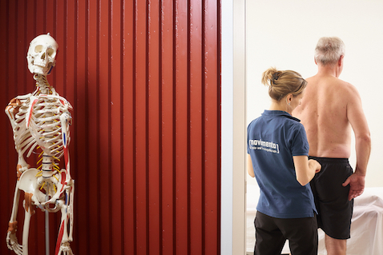
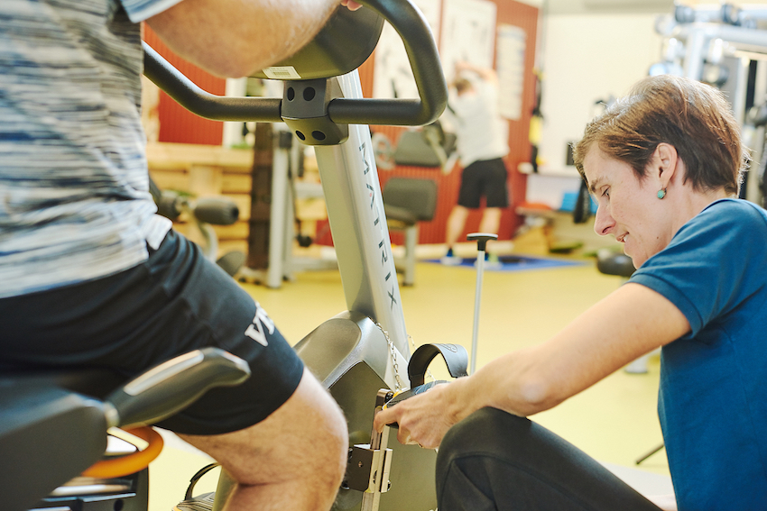
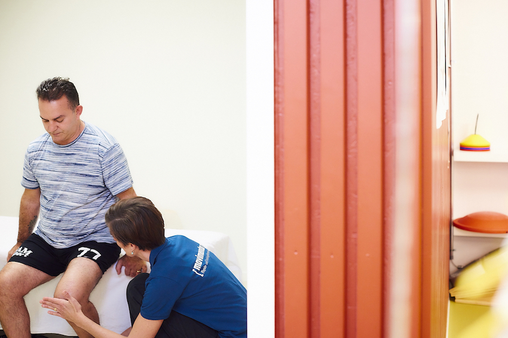
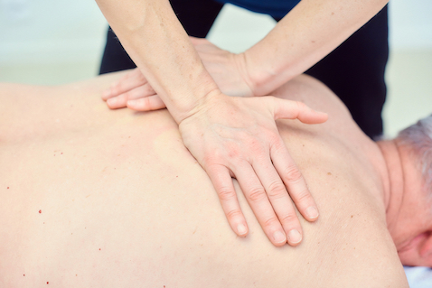
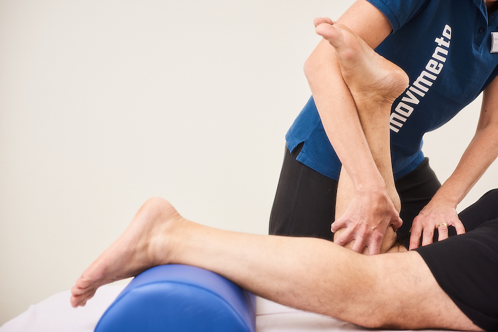

- 
- 
- 
- 

- 
Physiotherapie bietet eine Vielzahl von Methoden, die unter anderem darauf zielen, Beeinträchtigungen des Bewegungsapparates zu reduzieren.
Egal, ob Ihre Probleme durch einen Unfall, eine Krankheit oder durch Verhaltensfehler entstanden sind, wir gehen Ihren Beschwerden auf den Grund. Nach einer körperlichen Befunderhebung legen wir mit Ihnen individuelle Ziele fest und stimmen unseren Behandlungsplan darauf ab.
Gesundheit ist mehr als das Freisein von Krankheiten und Gebrechen. Als PhysiotherapeutInnen helfen wir Ihnen, Ihr körperliches, geistiges und soziales Wohlbefinden zu erlangen und zu erhalten.
Behandlungskosten werden auf ärztliche Verordnung von der Krankenkasse oder Unfallversicherung übernommen.
Eine Behandlung, die nicht über die Kasse abgerechnet wird, kostet Fr. 55.- für 25 Minuten.
Behandlungen wie z.B. medizinische Massagen können auch verschenkt werden (Fr. 55.- für 25 Minuten).
Eine Therapiesitzung dauert in der Regel 20-25 Minuten.